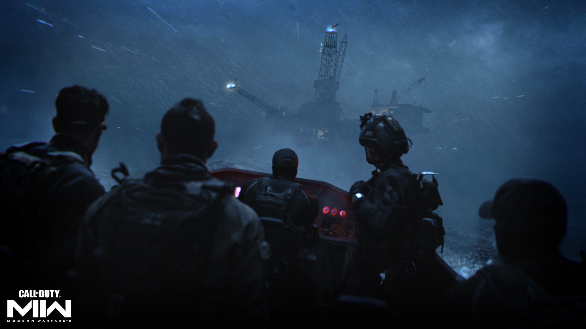

A sequência do recorde Call of Duty®: Modern Warfare® está quase aqui.
Call of Duty®: Modern Warfare® II dará início a uma nova era para a franquia quando for lançado mundialmente na sexta-feira, 28 de outubro.
Testemunhe e experimente o que fez a Força-Tarefa 141 se tornar o esquadrão icônico e lendário que é quando a ação começa após a ação angustiante e de tirar o fôlego de Call of Duty: Modern Warfare (2019).

Uma nova era para Call of Duty
Call of Duty está dando um salto geracional, inaugurando uma nova era - e tudo começa com Modern Warfare® II , que lidera o lançamento mais ambicioso de toda a franquia.
Esta experiência de última geração está preparada para remodelar a famosa série e atrair jogadores de Call of Duty em todos os lugares.
- Modern Warfare II , a sequência de Call of Duty: Modern Warfare (2019) será lançado em 28 de outubro.
- O novo Call of Duty®: Warzone™ 2.0 será lançado ainda este ano.
- Uma experiência móvel totalmente nova que trará Call of Duty: Warzone para jogadores em movimento está em desenvolvimento.
- Um motor unificado em toda a franquia começando com Modern Warfare II e Warzone 2.0.
- RICOCHET Anti-Cheat ™ será lançado no primeiro dia de Modern Warfare II e do novo Warzone.
- Call of Duty está voltando ao Steam no PC começando com Modern Warfare II.
- E tem mais por vir…

Campanha e operações especiais
A Força-Tarefa 141 enfrenta sua maior ameaça até agora - uma ameaça recém-alinhada com conexões profundas, mas desconhecidas.
Heróis familiares retornam e novos aliados são formados em uma operação itinerante, incluindo missões na Europa, Ásia e Américas.

Esta campanha está programada para ser uma experiência incrível em vários níveis: cercos offshore com combate subaquático, ataques explosivos a 30.000 pés acima das fortalezas inimigas e missões furtivas de alto risco e baixo perfil, tanto à vista de todos quanto sob a cobertura de Trevas.
Ao seu lado estão companheiros de esquadrão icônicos: o líder da equipe, Capitão John Price; o sargento experiente Kyle “Gaz” Garrick; o próprio lobo solitário, o favorito dos fãs Simon “Ghost” Riley; o destemido sargento John “Soap” MacTavish; bem como o mais novo membro da equipe, o Coronel Alejandro Vargas, um incorruptível Operador Tier 1 e membro das Forças Especiais Mexicanas.
Após a Campanha, os jogadores podem se juntar com sua dupla para Operações Especiais evoluídas. Este modo cooperativo tático aprimora suas habilidades de construção de equipe e também prepara o cenário para as horas quase infinitas de jogo disponíveis no Multiplayer de classe mundial.
Multijogador: inovações de última geração
Aqueles que encomendarem e entrarem no Multiplayer de Call of Duty: Modern Warfare II no lançamento estarão entre os primeiros a experimentar e aumentar o nível das várias armas básicas, explorar uma ampla variedade de mapas e modos,
conhecer um elenco internacional de operadores e muito mais.
Com novas formas de jogar e inúmeras inovações de jogabilidade, incluindo um Gunsmith renovado que oferece mais personalização do que nunca, Modern Warfare II começará a funcionar no primeiro dia, pronto para receber recém-chegados e competidores ferozes.
O primeiro a lutar também estará bem preparado para um incrível calendário pós-lançamento, definido para incluir uma enorme quantidade de conteúdos gratuitos pós-lançamento com novos mapas, modos e eventos especiais de grande sucesso que não podem ser perdidos.
Modern Warfare II – Falando tecnicamente
Começando com Modern Warfare II , o novo título apresenta o novo mecanismo de próxima geração que estreou com Modern Warfare (2019).
Modern Warfare II será o Call of Duty mais avançado da história, com uma experiência verdadeiramente imersiva com som, iluminação e gráficos incrivelmente realistas.
Modern Warfare II apresenta um sistema de material baseado em física permitindo fotogrametria de última geração, um novo sistema de streaming baseado em mosaico híbrido, um novo sistema de renderização de decalque PBR, iluminação volumétrica mundial, 4K HDR,
bem como uma nova geometria de GPU encanamento.
Tudo isso está a serviço de uma campanha cinematográfica massiva.
O jogo também apresenta um novo sistema avançado de IA. Inimigos e aliados em Campanha e Operações Especiais agem taticamente usando técnicas de combate e manobras de cobertura que seriam uma segunda natureza para um Operador de Nível 1.
Warzone na próxima geração
para Call of Duty e conteúdo adicional
28 de outubro marca um novo começo para Call of Duty , começando com o lançamento de Modern Warfare II.
Logo depois, um Warzone totalmente novo será lançado como uma extensão do universo Modern Warfare II . Com ele vem nova tecnologia, novos recursos e nova jogabilidade que funcionam perfeitamente juntos.
Ao longo do tempo, levamos a sério uma ampla gama de comentários da comunidade.
Para oferecer essa experiência de última geração, o Warzone 2.0 apresentará novos conteúdos e sistemas de Modern Warfare II com progressão e inventários totalmente novos.
A zona de guerra de hojecontinuará como uma experiência separada que incluirá uma continuação da progressão do jogador e dos inventários dessa experiência de Warzone.
Mal podemos esperar para compartilhar mais detalhes em breve.
O desenvolvimento da nova e dinâmica experiência Warzone 2.0 também está sendo liderado pela Infinity Ward, juntamente com a Raven Software.
O novo battle royale Warzone gratuito para jogar também apresenta a mesma tecnologia que alimenta o Modern Warfare II , para que ambos os títulos aproveitem o mecanismo Call of Duty que estreou com Modern Warfare (2019), fornecendo as experiências Call of Duty mais perfeitas e avançadas sempre.
Além disso, espere mais informações em um novo modo sandbox e no novo espaço de jogo à medida que nos aproximamos do lançamento.